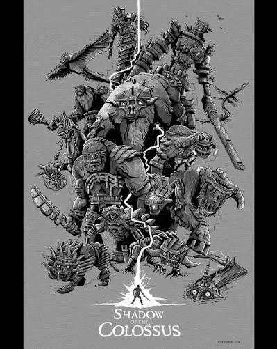
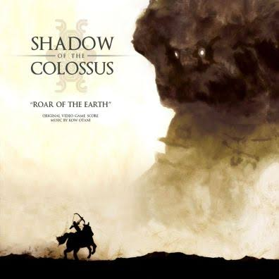

Shadow of the Colossus
Conhecer os colossos
O jogo
Wander é um jovem que leva o corpo de uma garota até uma terra proibida. Lá, uma voz promete trazê-la de volta se ele derrotar dezesseis colossos gigantescos, e ele parte montado no seu cavalo, Agro.
- 16colossos
- 2005lançamento no PS2
- 2018remake no PS4
- Team Icoestúdio criador
gosto de:
-
Valus
Minotauro
O primeiro. Um gigante de cabeça de touro que ensina como escalar.
-
Quadratus
Mamute
Quadrúpede imenso, enfrentado ao lado do Agro.
-
Gaius
Cavaleiro
Guerreiro de pedra com uma espada colossal.
-
Phaedra
Kirin
Criatura lendária de quatro patas, também com o Agro.
-
Avion
Pássaro
O colosso voador, que domina o céu.
-
Barba
Minotauro
Gigante peludo de barba farta.
-
Hydrus
Enguia
Serpente do lago, com torretas elétricas nas costas.
-
Kuromori
Lagarto
Mais esperto que forte: vence quem usa a cabeça.
-
Basaran
Tartaruga
Casco gigante que solta rajadas de energia.
-
Dirge
Serpente
Réptil colossal que corta o deserto, com o Agro.
-
Celosia
Leão
Um dos menores, mas ágil e perigoso.
-
Pelagia
Poseidon
Não tem olhos; tem duas presas que mudam de cor.
-
Phalanx
Serpente voadora
Flutua pelo céu, e a luta é a mais longa.
-
Cenobia
Cérbero
Pequeno perto dos outros, mas muito resistente.
-
Argus
Minotauro
Um dos maiores, numa arena de ruínas antigas.
-
Malus
Evis
O colosso final, o mais poderoso de todos.
Trilha sonora
